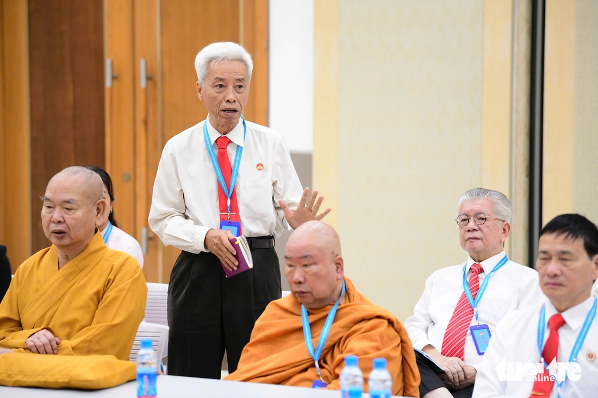

Phó bí thư Thành ủy, Chủ tịch Ủy ban Mặt trận Tổ quốc Việt Nam TP. HCM Nguyễn Phước Lộc đã quán triệt phát biểu của Tổng Bí thư Tô Lâm tại Đại hội đại biểu Đảng bộ Mặt trận Tổ quốc, các đoàn thể Trung ương lần thứ I, nhiệm kỳ 2025-2030.
Phó chủ tịch thường trực Ủy ban Mặt trận Tổ quốc Việt Nam TP.HCM Trương Thị Bích Hạnh điều hành góp ý dự thảo văn kiện trình Đại hội đại biểu toàn quốc lần thứ XIV của Đảng.
Sau đó các đại biểu chia thành 10 tổ góp ý các nội dung văn kiện; thảo luận, bàn bạc các giải pháp triển khai hiệu quả việc thực hiện các chỉ tiêu, nhiệm vụ, chương trình hành động trong nhiệm kỳ tới.
Ngày mai (30-11), Đại hội Mặt trận Tổ quốc Việt Nam TP.HCM tiếp tục với nhiều nội dung quan trọng, sẽ ra mắt ứng dụng số "An sinh xã hội TP.HCM", ra mắt Ủy ban Mặt trận Tổ quốc Việt Nam TP.HCM khóa I, nhiệm kỳ 2025-2030…

Thiếu tướng Phan Anh Minh - nguyên Phó giám đốc Công an TP.HCM - đóng góp ý kiến